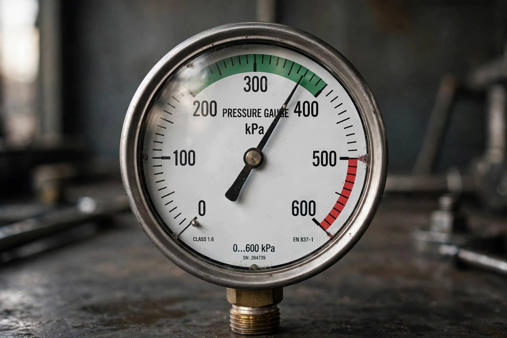

Pascal (unit)
| Pascal | |
| Unit system | SI derived unit |
|---|---|
| Unit of | Pressure, stress |
| Symbol | Pa |
| Named after | Blaise Pascal |
| In SI base units | kg·m−1·s−2 |

The pascal (symbol: Pa) is the unit of pressure in the International System of Units (SI). It is defined as one newton per square metre (N/m2). The unit is named after the French mathematician and physicist Blaise Pascal.
Definition and use
One pascal is a small quantity: standard atmospheric pressure is 101,325 Pa, commonly expressed as 101.325 kilopascals (kPa). Meteorologists often report pressure in hectopascals (hPa), numerically equal to the older millibar. Engineers use the megapascal (MPa) for material stresses. Common multiples include the bar (exactly 100,000 Pa), which is close to atmospheric pressure.
Namesake
Blaise Pascal (1623–1662) made foundational contributions to hydrostatics and hydrodynamics, including Pascal's law of pressure transmission in fluids and experiments demonstrating atmospheric pressure with the barometer.
See also: Bar (unit), Newton (unit).